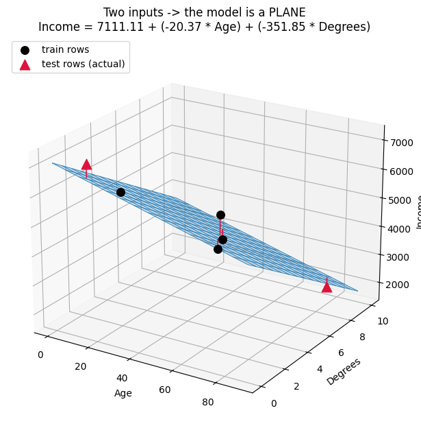
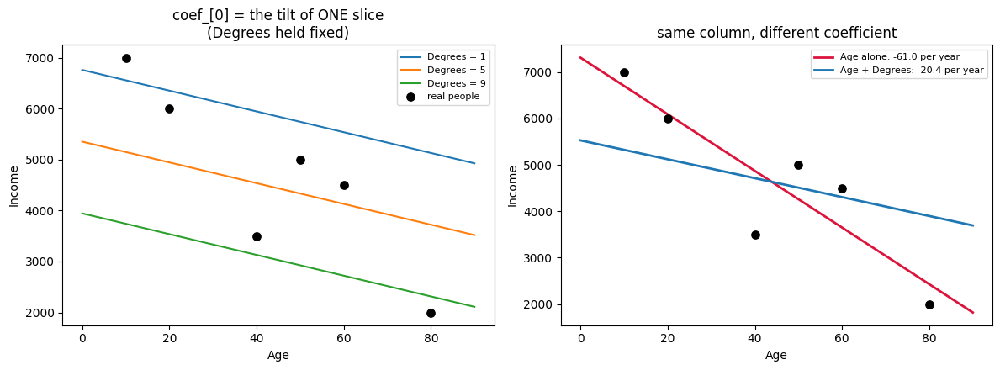
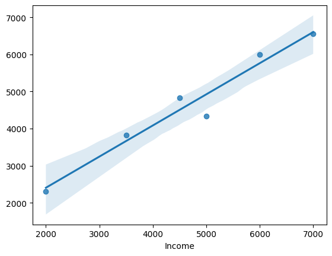
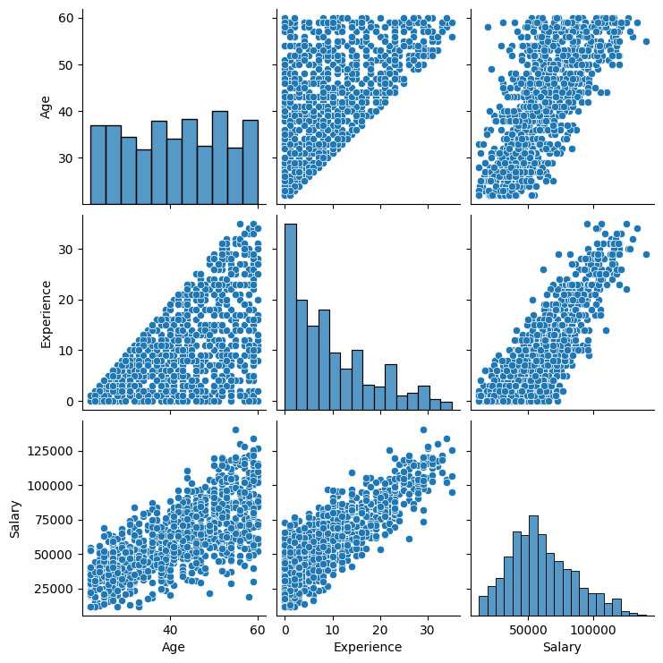
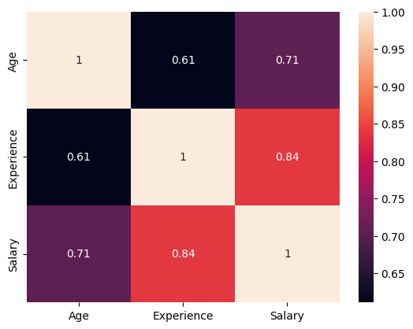
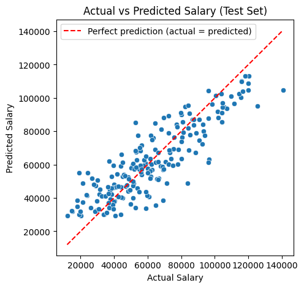
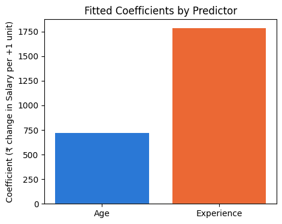

Ravi added a second column to his price model and the first coefficient changed. Distance had been worth ₹61 per unit; beside "number of parcels" it dropped to ₹20.
Nothing about distance had changed. He suspected a bug.
There was no bug. The meaning of the number had changed. Alone, distance was quietly taking credit for parcels too, because long trips carried more parcels. Once parcels had their own column, they took their share back.
A coefficient in a multi-column model always means: the effect of this column while the others are held still. That is why coefficients cannot be read one at a time.
🔑 The one idea
With several columns each coefficient is a partial effect — the others being held still.
Real life is rarely one column. Income depends on age and education. So we give the
model both columns:
Income = b0 + w1 * Age + w2 * Degrees
That is multiple linear regression. Same class, LinearRegression. Same three verbs.
Only X gets wider.
Simple
Multiple
input columns
1
2 or more
formula
y = m*x + c
y = b0 + w1*x1 + w2*x2 + ...
coef_
one number
one number per column
intercept_
one number
still one number
picture
a line
a flat sheet (a plane)
"Linear" does not mean one line. It means every input keeps its own fixed rate.
Age always costs the same per year, whatever the number of degrees. Nothing bends,
nothing multiplies. That is what makes the model easy to read — and what makes it fail
when reality bends.
codecell 1
import pandas as pd
1. The data
Three columns, six rows.
column
role
name in code
Age
input (feature)
x
Degrees
input (feature)
x
Income
the answer we want (target)
y
Six rows is a toy dataset. It is the right size for learning the mechanics and the
wrong size for trusting any number that comes out. That warning comes back at score().
Note
The path here is absolute, so this cell only runs on this machine. A repo-relative
path — ../../../01_Python/03_Pandas/Data/age2.csv — travels better.
Before fitting anything, plot each input against the target. Two inputs, two charts.
Both charts slope downward: older people in this table earn less, and more degrees
also means less income. That is odd for real life, and a good reminder that six invented
rows are not the world.
codecell 5
import matplotlib.pyplot as plt
plt.scatter(df['Age'],df['Income'])
plt.xlabel('Age')
plt.ylabel('Income')
plt.show()
Here is the trap. It feels like you could fit a line on each chart and add them up.
You cannot, and this is the whole idea of multiple regression.
Age and Degrees are not independent in this table — they move together
(correlation 0.78). So part of what "age" seems to explain is really education
sneaking in through the back door.
Fit the columns separately and together, and the same column gets a different number:
model
what Age is worth
Age alone
−61 income per year
AgeandDegrees together
−20.4 income per year
Same data, same column. The coefficient dropped by two thirds because Degrees took
back the credit it was owed.
Age alone → "everything that comes with getting older"
Age beside Degrees → "age only, education already accounted for"
That second reading is the useful one, and it exists only when the columns are fitted
together. This is why we pass a table to fit, not one column at a time.
4. X becomes a table with two columns
x = df[['Age', 'Degrees']] # double brackets -> DataFrame, 2 columns
y = df['Income'] # single brackets -> Series, 1 column
brackets
type
shape
x
[['Age','Degrees']]
DataFrame
(6, 2)
y
['Income']
Series
(6,)
sklearn always wants X2-D and y1-D. In the last notebook the double
brackets looked like a nuisance; here they are simply how you ask for two columns.
The column order you type is the order coef_ comes back in. Remember that — it is
the only link between a number and the column it belongs to.
codecell 9
x = df[['Age', 'Degrees']]
y = df['Income']
5. Split before fitting
test_size=0.3 on 6 rows: 4 rows to learn from, 2 rows kept hidden.
random_state=0 fixes which rows go where, so this notebook gives the same numbers
every run.
Be honest about the size: 4 rows to find 3 numbers (b0, w1, w2) is almost no
information. The workflow is correct; the confidence in the result should stay low.
codecell 11
from sklearn.model_selection import train_test_split
X_train,X_test,y_train,y_test = train_test_split(x,y,test_size=0.3,random_state=0)
X_train
Output
Age Degrees
1 60 3
3 20 2
0 50 5
4 40 7
codecell 12
X_test
Output
Age Degrees
5 80 9
2 10 1
6. fit() — find the flat sheet closest to the dots
With one input, fit looked for the best line. With two inputs, it looks for the
best plane — a flat sheet floating over the Age–Degrees floor.
"Best" means the same thing as before: the total of the squared vertical gaps between
the real dots and the sheet is as small as possible. This is least squares.
flow diagram (rendered in the notebook)
flowchart LR
A["X_train (4 rows x 2 cols)<br/>y_train (4 values)"] --> B["fit()"]
B --> C["intercept_ = 7111.11<br/>coef_ = [-20.37, -351.85]"]
E["a new row<br/>Age=80, Degrees=9"] --> D["predict()"]
C --> D
D --> F["7111.11 - 20.37*80 - 351.85*9<br/>= 2314.81"]
style C fill:#2f6fed,color:#fff
style F fill:#2f9e6f,color:#fff
Four rows went in. Three numbers came out, and the rows are not kept. That is the
whole model — you could email it.
Note
💡 Engineering Extension — Recommended Extension - Not part of instructor
curriculum. There is no loop and no learning rate here. LinearRegression solves the
least-squares system directly with linear algebra (scipy.linalg.lstsq). Gradient
descent belongs to models that have no closed-form answer.
codecell 14
from sklearn.linear_model import LinearRegression
clf = LinearRegression()
codecell 15
clf.fit(X_train, y_train)
Output
LinearRegression()
7. predict() — put the row into the formula
No learning happens here. Each test row is multiplied out and added up:
Those two numbers are exactly what the cell prints. One multiply per column, then one
add. Nothing else is inside predict.
codecell 17
clf.predict(X_test)
Output
array([2314.81481481, 6555.55555556])
8. score() — R², and why 0.976 means little here
score returns R²: how much of the movement in y the model explains.
1.0 is perfect, 0.0 is no better than always guessing the average.
We got 0.976 on the test rows — and this is where a beginner celebrates and a
reviewer squints:
rows
R²
train
4
0.795
test
2
0.976
The test score is higher than the train score. That is not skill, it is luck. With two
test points, R² is decided by two numbers, and it swings wildly with a different
random_state.
Takeaway: a score computed on 2 rows is a number, not evidence. Real evaluation
needs enough test rows, or cross_val_score.
The array follows the order you built x in. Two columns, two coefficients. Twenty
columns would give twenty.
How to read one coefficient:if this input goes up by 1 and everything else stays
exactly the same, y moves by this much.
Age = -20.37 → one more year, holding degrees fixed, and income drops by ~20.
Degrees = -351.85 → one more degree, holding age fixed, and income drops by ~352.
That phrase "holding the other fixed" is the whole difference from the simple model, and
section 12 draws it.
⚠️ Do not rank importance by size.351 is not "17 times more important" than 20.
The units are different — one is per year, the other is per degree. To compare
columns fairly, scale them first (StandardScaler), then compare.
codecell 21
clf.coef_
Output
array([ -20.37037037, -351.85185185])
10. intercept_ — the anchor
7111.11 is the income the formula predicts when every input is 0: a person aged 0
with 0 degrees.
Nobody in the table is 0 years old. So the intercept is not a prediction about a real
person — it is the height at which the plane is pinned so that it sits correctly over
the rows we actually have.
Simple regression
Multiple regression
coef_
tilts the line
tilts the plane, once per column
intercept_
slides the line up/down
slides the plane up/down
codecell 23
clf.intercept_
Output
np.float64(7111.11111111111)
11. Proof — rebuild predict() by hand
If the model really is b0 + w1*Age + w2*Degrees, then writing that out ourselves must
give exactly the same numbers. x.values @ coef_ is the dot product: multiply each
column by its coefficient and add the results.
by hand : [2314.81481481 6555.55555556]
by sklearn: [2314.81481481 6555.55555556]
same? -> True
row 0: 7111.11 + (-20.37 * 80) + (-351.85 * 9) = 2314.81
12. The visual — one line becomes a plane
This is the picture worth keeping. Two inputs make a floor (Age × Degrees), and the
model is a flat sheet hovering above that floor. The red sticks are the errors: the
vertical distance from each real person to the sheet. fit() chose the sheet that makes
the total of those squared sticks as small as possible.
1 input → a LINE in 2-D (x, y)
2 inputs → a PLANE in 3-D (x1, x2, y)
n inputs → a HYPERPLANE in n+1-D — same maths, no picture
codecell 27
import numpy as np
import matplotlib.pyplot as plt
b0 = clf.intercept_
w1, w2 = clf.coef_
fig = plt.figure(figsize=(9, 6.5))
ax = fig.add_subplot(111, projection='3d', computed_zorder=False)
# the fitted plane: Income = b0 + w1*Age + w2*Degrees
ages = np.linspace(0, 90, 15)
degrees = np.linspace(0, 10, 15)
AG, DG = np.meshgrid(ages, degrees)
INCOME = b0 + w1 * AG + w2 * DG
ax.plot_wireframe(AG, DG, INCOME, color="tab:blue", lw=0.7, alpha=0.9)
ax.plot_surface(AG, DG, INCOME, color="tab:blue", alpha=0.20, shade=False)
# red stick = the error for that person
for age, deg, real in zip(df['Age'], df['Degrees'], y):
ax.plot([age, age], [deg, deg], [real, b0 + w1*age + w2*deg],
color="crimson", lw=1.2, zorder=10)
ax.scatter(X_train['Age'], X_train['Degrees'], y_train, s=70, color="black",
depthshade=False, label="train rows", zorder=11)
ax.scatter(X_test['Age'], X_test['Degrees'], y_test, s=110, color="crimson",
marker="^", depthshade=False, label="test rows (actual)", zorder=11)
ax.set_xlabel("Age"); ax.set_ylabel("Degrees"); ax.set_zlabel("Income")
ax.set_title(f"Two inputs -> the model is a PLANE\nIncome = {b0:.2f} + ({w1:.2f} * Age) + ({w2:.2f} * Degrees)")
ax.legend(loc="upper left")
ax.view_init(22, -58)
plt.tight_layout(); plt.show()

Output from this notebook.
13. What "holding the other column fixed" actually looks like
Slice the plane at a fixed number of degrees and you get a line. Slice it at a
different number of degrees and you get another line — same tilt, different height.
Left chart: three slices. All parallel. Their shared tilt iscoef_[0] = -20.37.
Changing Degrees only moves the line up or down, never bends it. That is what
"linear" buys you.
Right chart: the same Age column fitted alone (red) versus inside the two-column
model (blue). The red line is much steeper, because when Degrees is missing, Age
is forced to carry its effect too.
codecell 29
from sklearn.linear_model import LinearRegression
import numpy as np
import matplotlib.pyplot as plt
b0 = clf.intercept_
w1, w2 = clf.coef_
ages = np.linspace(0, 90, 50)
fig, ax = plt.subplots(1, 2, figsize=(12, 4.5))
# --- left: slice the plane at fixed Degrees -> parallel lines
for d in [1, 5, 9]:
ax[0].plot(ages, b0 + w1*ages + w2*d, label=f"Degrees = {d}")
ax[0].scatter(df['Age'], y, color="black", s=45, zorder=5, label="real people")
ax[0].set_title("coef_[0] = the tilt of ONE slice\n(Degrees held fixed)")
# --- right: Age alone vs Age inside the multiple model
simple = LinearRegression().fit(df[['Age']], y)
ax[1].scatter(df['Age'], y, color="black", s=45, zorder=5)
ax[1].plot(ages, simple.intercept_ + simple.coef_[0]*ages, color="crimson", lw=2,
label=f"Age alone: {simple.coef_[0]:.1f} per year")
ax[1].plot(ages, b0 + w1*ages + w2*df['Degrees'].mean(), color="tab:blue", lw=2,
label=f"Age + Degrees: {w1:.1f} per year")
ax[1].set_title("same column, different coefficient")
for a in ax:
a.set_xlabel("Age"); a.set_ylabel("Income"); a.legend(fontsize=8)
plt.tight_layout(); plt.show()

Output from this notebook.
14. Predict every row
The same formula applied to all six rows, so predictions can be drawn next to the real
values. (Rows 0–3 were used for training, so this is not a fair test — it is only for
the picture.)
15. sns.regplot(x=y, y=y_pred) — actual against predicted
This chart does not show the model's plane. It puts the real income on the x-axis
and the predicted income on the y-axis, one dot per person.
A perfect model would put every dot on the 45° diagonal, because predicted would equal
actual. regplot then fits its own fresh straight line through those dots and
shades a confidence band around it.
Read it as a report card, not as the model: the closer the dots hug the diagonal,
the better. (Both axes get labelled Income, which is confusing — the next cell fixes
that.)
codecell 33
import seaborn as sns
sns.regplot(x=y, y=y_pred)
Output
<Axes: xlabel='Income'>

Output from this notebook.
16. The same check, drawn honestly
regplot draws the best line through the dots. What we actually want to compare
against is the 45° line where predicted = actual. Those are different lines, and the
gap between a dot and the diagonal is the real error.
codecell 35
import matplotlib.pyplot as plt
y_pred = clf.predict(x)
fig, ax = plt.subplots(figsize=(6.5, 6))
lim = [y.min() * 0.85, y.max() * 1.08]
ax.plot(lim, lim, ls="--", color="grey", label="perfect prediction (y = x)")
ax.scatter(y, y_pred, s=70, color="tab:blue", zorder=5)
for actual, pred in zip(y, y_pred):
ax.plot([actual, actual], [actual, pred], color="crimson", lw=1.2) # the error
for actual, pred in zip(y, y_pred):
ax.annotate(f"{pred - actual:+.0f}", (actual, pred), textcoords="offset points",
xytext=(8, -4), fontsize=8, color="crimson")
ax.set_xlabel("Actual Income"); ax.set_ylabel("Predicted Income")
ax.set_title("Actual vs Predicted (red stick = error)")
ax.set_xlim(lim); ax.set_ylim(lim); ax.set_aspect("equal"); ax.legend(fontsize=8)
plt.tight_layout(); plt.show()
The array follows your column order in x. Reorder the columns and the numbers move with them. Print dict(zip(x.columns, clf.coef_)) instead of trusting memory.
"The biggest coefficient is the most important column"
Only true if every column shares the same unit and scale. Years and degrees do not. Scale first, then compare.
Passing a single column as df['Age']
LinearRegression needs X 2-D. One column must still be df[['Age']].
Trusting a high R² from a tiny test set
Ours is 0.976 from 2 rows, while training sits at 0.795. Change random_state and it moves a lot.
Adding every available column "because more is better"
Correlated columns (here 0.78) split the credit between themselves, so the individual coefficients get unstable — multicollinearity. The predictions can still be fine; the explanations are what break.
Reading the intercept as a real person
Age = 0, Degrees = 0 does not exist in this data. It anchors the plane, nothing more.
Where this is used
Baseline before anything fancy — price estimates, demand forecasts, delivery-time
prediction, capacity planning. It stays in production because it is fast, and because
each coefficient can be explained to a regulator or a business owner. A gradient-boosted
model may score better and still lose the argument.
Note
💡 Engineering view. Three floats and a column order — that is the entire
artefact. It is smaller than a config file, it serves in microseconds, and it needs
no GPU. The risky part of shipping it is not the model, it is guaranteeing that the
columns arrive in the same order at serving time as at training time. That is a
data-contract problem, and it is exactly what Pipeline exists to lock down.
Interview view
Simple vs multiple regression: one input column vs many; a line vs a plane.
A coefficient is a partial effect — the effect of that column with the others
held fixed.
coef_ is an array whose order is the column order of X.
Coefficient magnitudes are only comparable after scaling.
Correlated inputs (multicollinearity) destabilise coefficients but not necessarily
predictions.
Key takeaway
If you remember only one thing: multiple linear regression is still one straight
formula — y = b0 + w1*x1 + w2*x2 + ... — and each coefficient answers "if only this
column moves by 1, how much does y move?". Adding a column can change every other
coefficient, so a coefficient is a statement about the model it lives in, never
about the column on its own.
27. Multiple Linear Regression — Hands-On with scikit-learn
Multiple Linear Regression is the extension of Simple Linear Regression (see 25_Simple_Linear_Regression.MD and 26_Simple_Linear_Regression.ipynb) to more than one predictor. Instead of one x predicting y, we now have several input columns predicting one output column — the equation grows from y = m·x + c to y = m1·x1 + m2·x2 + c.
../../_shared_data/regression_dataset.csv has three columns — Age, Experience, Salary — for 1000 people. Salary is what we want to predict; Age and Experience are the two predictor variables.
This notebook walks the full flow: load the data, look at it (a pairplot and a correlation heatmap this time, since there's more than one relationship to check), split it into inputs/target, train a LinearRegression model on two predictors at once, read back what it learned, and finish with two charts that show how good the fit actually is.
codecell 1
import pandas as pd # pandas: load the CSV and work with it as a table (DataFrame)
import seaborn as sns # seaborn: nicer statistical plots (pairplot, heatmap), built on matplotlib
import matplotlib.pyplot as plt # matplotlib: base plotting library, used for titles/labels/showing figures
from sklearn.model_selection import train_test_split # splits our data into a training pool and a held-back testing pool
from sklearn.linear_model import LinearRegression # the model class — now fitting more than one predictor at once
Step 1 — Load the dataset
codecell 3
dataset = pd.read_csv("../../_shared_data/regression_dataset.csv") # read the CSV file from disk into a pandas DataFrame called "dataset"
Step 2 — Peek at the first few rows
codecell 5
dataset.head(3) # show only the first 3 rows, just to eyeball the columns and their values
Same habit as every earlier ML/ topic and 26_Simple_Linear_Regression.ipynb: before training anything, confirm there are no gaps. scikit-learn cannot train on missing (NaN) values.
codecell 9
dataset.isnull().sum() # count missing values per column — all 0 here, since this dataset was generated clean
Output
Age 0
Experience 0
Salary 0
dtype: int64
Step 5 — Visualize how every column relates to every other (pairplot)
With Simple Linear Regression there was only one x, so a single scatter plot showed the whole relationship. Now that there are two predictors (Age, Experience) plus the target (Salary), a pairplot is the equivalent tool: it draws a scatter plot for every pair of columns, and a histogram for each column against itself on the diagonal. It's a fast way to eyeball whether Salary roughly rises with Age and Experience, and whether the two predictors already look related to each other before the model ever sees them.
codecell 11
sns.pairplot(data=dataset) # scatter every column against every other column, histogram on the diagonal
plt.show() # render the grid of plots

Output from this notebook.
Step 6 — Quantify those relationships (correlation heatmap)
The pairplot shows relationships visually; a correlation heatmap puts a number on each one. Correlation ranges from -1 (perfectly opposite) to +1 (perfectly together), with 0 meaning no straight-line relationship at all. annot=True prints the actual number inside each cell. What matters most here is how strongly Age and Experience each correlate with Salary — that's what the model leans on — and, as a side note, how strongly Age and Experience correlate with each other. Two predictors that are too similar to one another give the model overlapping, less useful information — a topic called multicollinearity, worth knowing exists but not something we need to solve here.
codecell 13
sns.heatmap(data=dataset.corr(), annot=True) # dataset.corr() computes the correlation table; heatmap colors + prints each value
Output
<Axes: >

Output from this notebook.
Step 7 — Split into inputs (x) and target (y)
Same idea as Simple Linear Regression, just wider: x needs to hold both predictor columns now, not one. dataset.iloc[:, :-1] is positional slicing — "every row, every column except the last one" — a habit worth having since it works no matter how many predictor columns a dataset has. y stays a single column, same as before.
codecell 15
x = dataset.iloc[:, :-1] # every row, every column except the last ("Salary") — this is now a 2-column table
x # display it, to see what we just built
In 26_Simple_Linear_Regression.ipynb, x was a single column (a 1-D Series) and had to be manually reshaped into a 2-D table before scikit-learn would accept it. Here, x already has two columns, so pandas hands it back as a 2-D DataFrame automatically — no reshaping needed. .ndim confirms that: 2 means "a table with rows and columns," which is the shape (n_samples, n_features) every scikit-learn model expects for its inputs.
codecell 17
x.ndim # 2 = already a 2-D table (rows x columns) — no reshape needed, unlike the single-column case
Output
2
Step 9 — Pull out y (the target)
codecell 19
y = dataset["Salary"] # pull out just the "Salary" column — this is what the model will learn to predict
y # display it, to see what we just built
A quick re-check that slicing x and y out of dataset didn't accidentally drop or duplicate any rows — still 1000 rows, 3 original columns in the source data.
codecell 21
dataset.shape # still (1000, 3) — slicing into x and y doesn't change the original dataset
Output
(1000, 3)
Step 11 — Split into train and test sets
train_test_split holds back 20% of the rows (test_size=0.2) as a test set the model never sees during training. That's the only fair way to check later whether the model actually learned the pattern, or just memorized the training rows. random_state=42 fixes the shuffle so the split is reproducible — same rows in train/test every time this notebook re-runs.
codecell 23
x_train, x_test, y_train, y_test = train_test_split(x, y, test_size=0.2, random_state=42) # 80% train, 20% held back for testing
Step 12 — Train the model
.fit() is where the actual learning happens: scikit-learn searches for the m1, m2, and c that make y = m1·Age + m2·Experience + c fit the training rows as closely as possible — same least-squares idea as Simple Linear Regression, just solving for two slopes instead of one.
codecell 25
lr = LinearRegression() # create an (untrained) Linear Regression model
lr.fit(x_train, y_train) # train it — this step learns m1, m2, and c from the training rows
Output
LinearRegression()
Step 13 — Score the model on unseen data
.score() on regression models returns R² — the fraction of the variation in Salary that Age and Experience together explain, on the test rows the model never trained on. Multiplying by 100 turns it into a percentage. An R² of ~75% means the two predictors explain about three-quarters of why salaries differ in this data; the rest comes from the random noise baked into how this dataset was generated (in a real dataset, it would be other factors the two columns don't capture) — same caveat as any regression. Backend analogy: like test coverage, but for how well a formula predicts outcomes rather than how much code got run.
codecell 27
lr.score(x_test, y_test) * 100 # R² on the test set, as a percentage — how much of Salary's variation Age+Experience explain
Output
75.26418389841064
Step 14 — The general equation
Simple Linear Regression fit a line: y = m·x + c. Multiple Linear Regression fits a flat plane (or higher-dimensional equivalent) instead: one slope per predictor, all added together, plus one intercept.
codecell 29
#y = m1x1 + m2x2 + c
Step 15 — Look at the learned coefficients (the slopes)
lr.coef_ returns one number per predictor, in the same order as x's columns. Each number is that predictor's m: "holding the other predictor fixed, how much does Salary change for every +1 unit of this one?"
codecell 31
lr.coef_ # [m1, m2] — one slope per predictor column, in the same order as x.columns
Output
array([ 719.07681097, 1784.49764362])
Step 16 — Look at the intercept
lr.intercept_ is c — the model's predicted Salary when every predictor is 0. As with Simple Linear Regression's intercept, treat this as a mathematical anchor for the line/plane, not a literal prediction: nobody in this dataset has Age = 0, so this number is an extrapolation outside the real data, not a meaningful salary on its own.
codecell 33
lr.intercept_ # c — the fitted plane's value when Age = 0 and Experience = 0 (an extrapolation, not a real scenario)
Output
np.float64(13428.445576810147)
Step 17 — Confirm which coefficient belongs to which column
lr.coef_ is a plain array with no column labels attached, so the mapping to Age vs Experience depends entirely on column position — like calling a function with positional args instead of named ones. x.columns confirms the order: coef_[0] → Age, coef_[1] → Experience.
codecell 35
x.columns # confirms coef_[0] belongs to Age and coef_[1] belongs to Experience, in this order
Output
Index(['Age', 'Experience'], dtype='str')
Step 18 — Write out the fitted equation with real numbers
Plugging lr.coef_ and lr.intercept_ into y = m1·x1 + m2·x2 + c gives the actual formula this model learned — every prediction below is just this line of arithmetic run on a row's Age and Experience.
.predict() runs that exact equation on every row of x_test and returns the predicted salaries — one number per test row, ready to compare against the real y_test values.
codecell 39
lr.predict(x_test) # run the fitted equation on every test row — returns 200 predicted salaries
With one predictor, Simple Linear Regression's fit could be drawn as a single line through a scatter plot. With two predictors, there's no single line or 2-D plot that shows the fit directly. The standard workaround: plot every test row's actualSalary on the x-axis against its predictedSalary on the y-axis. A perfect model would put every point exactly on the diagonal line; the tighter the cloud of points hugs that diagonal, the better the model.
codecell 41
y_pred = lr.predict(x_test) # predicted salaries for every test row (same call as Step 19, saved this time for reuse below)
plt.figure(figsize=(5, 5))
sns.scatterplot(x=y_test, y=y_pred) # actual salary on x, predicted salary on y
lims = [min(y_test.min(), y_pred.min()), max(y_test.max(), y_pred.max())] # shared axis limits so the diagonal spans the full plot
plt.plot(lims, lims, color="red", linestyle="--", label="Perfect prediction (actual = predicted)")
plt.xlabel("Actual Salary")
plt.ylabel("Predicted Salary")
plt.title("Actual vs Predicted Salary (Test Set)")
plt.legend()
plt.show()

Output from this notebook.
Step 21 — Visualize which predictor moves salary more
lr.coef_ already gave the two slopes as numbers; a bar chart makes the comparison easier to read at a glance. One caveat worth flagging: Age (roughly 22–60) and Experience (roughly 0–35) sit on different scales, so comparing raw coefficient size is only a rough guide here, not a precise "feature importance" ranking — putting both predictors on the same scale first (see 16_Feature_Scaling_Normalization.ipynb) would make this comparison fully fair.
codecell 43
plt.figure(figsize=(5, 4))
plt.bar(x.columns, lr.coef_, color=["#2a78d6", "#eb6834"]) # one bar per predictor, height = its fitted slope
plt.axhline(0, color="#c3c2b7", linewidth=1) # baseline for reference
plt.ylabel("Coefficient (₹ change in Salary per +1 unit)")
plt.title("Fitted Coefficients by Predictor")
plt.show()

Output from this notebook.
Key Takeaways
Multiple Linear Regression just widens the equation: y = m·x + c becomes y = m1·x1 + m2·x2 + ... + c, one slope per predictor.
With 2+ predictor columns, x is already 2-D — no manual reshape needed, unlike the single-predictor case in 26_Simple_Linear_Regression.ipynb.
lr.coef_ has no column labels — it's matched to x.columns purely by position, so always confirm the order before reading the numbers.
R² (.score()) tells you how much of the target's variation the predictors explain overall — it doesn't tell you which single predictor deserves the credit.
With one predictor you can draw the fit as a line; with two or more, "actual vs predicted" is the standard way to see how well a multi-predictor model fits.
Comparing raw coefficients across predictors is only fair once they're on the same scale — otherwise a big coefficient might just mean "small units," not "more important."
FAQ
Q: scikit-learn already has .fit() and .predict() — why learn all the underlying concepts? Isn't everything going forward just going to be library calls?
Mostly yes — going forward, real work almost always means calling a library (scikit-learn now, PyTorch / HuggingFace later for the GenAI phase of this roadmap), not hand-writing gradient descent. That part doesn't go away. But the library only does the "turn the crank" step: given x_train, y_train, and a chosen algorithm, it computes the numbers. It cannot decide which algorithm fits the problem, cannot explain why a result is bad, and cannot fix a data problem it doesn't know exists — that judgment is exactly what the concepts are for.
Backend analogy: nobody reimplements HashMap or Spring's DispatcherServlet — but understanding hashing and the request lifecycle is still what lets you debug a slow map or a controller that's silently never invoked. lr.fit() / lr.predict() sit exactly where a Spring Data repository's save() / findById() sit: trivial to call, useless to debug or design around without knowing what's happening underneath.
Concretely, right in this notebook: the model scored ~75% R² (Step 13), not 100%. scikit-learn doesn't say whether that's good or a sign something's wrong — only understanding what R² measures, and what could be dragging it down (noise, a missing predictor, bad data), answers that.
Where the concepts earn their keep even though the library does the arithmetic:
Picking the right algorithm for the data — linear vs. tree-based vs. neural net. scikit-learn offers dozens; nothing picks for you.
Diagnosing a bad result — wrong scaling, data leakage, overfitting, the wrong evaluation metric.
Tuning hyperparameters on purpose instead of blind grid search.
Preparing data correctly (scaling, encoding, outliers) before it reaches .fit() — the library trusts that was done right.
On "for complicated data, don't we need to build it from scratch?" — no: scikit-learn and libraries like XGBoost handle massive real production tabular data as-is (fraud detection, credit scoring, recommendation systems all run on them). Implementing an algorithm from scratch is a one-time teaching exercise to build intuition for what .fit() is doing internally — the same reason a CS course has you implement a linked list once, even though production Java code never hand-rolls one. It's not what ships.
The reasoning skill this phase is building — is this model appropriate, is this result trustworthy, why did it fail — doesn't expire when the library changes. It's the same skill that later shows up as judging RAG retrieval quality, evaluating LLM outputs, or deciding fine-tune vs. prompt in the GenAI phase of the roadmap.
✍️ Handwritten notes
The pages written by hand while working through this topic — the version that came before the tidy write-up. Click any page to enlarge.